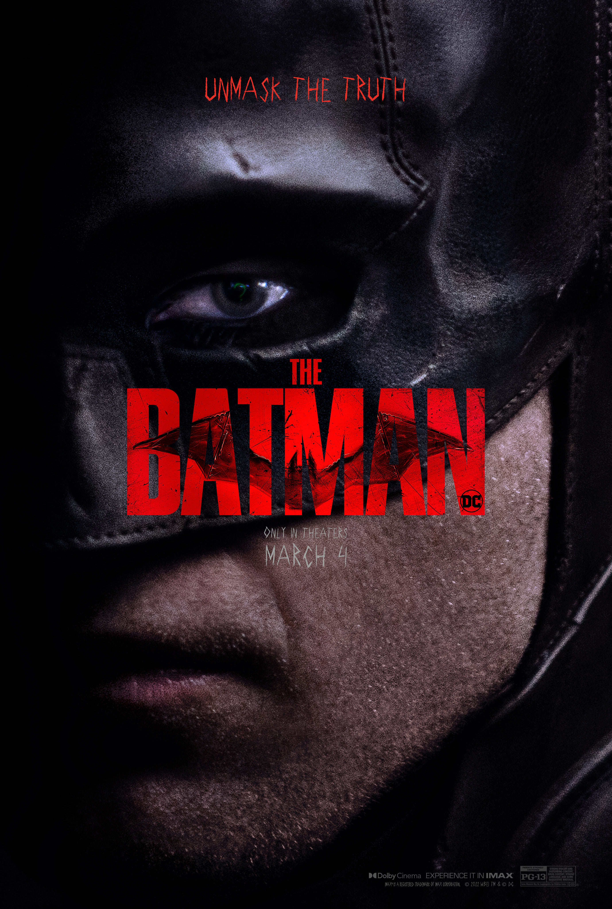

The Batman Oppenheimer Barbie
GENRE Crime RUNTIME 2hrs 56mins RATING
Batman ventures into Gotham City's underworld when a sadistic killer leaves behind a trail of cryptic clues. As the evidence begins to lead closer to home and the scale of the perpetrator's plans become clear, he must forge new relationships, unmask the culprit and bring justice to the abuse of power and corruption that has long plagued the metropolis.
CAST

GENRE War/Biopic RUNTIME 3 hrs RATING
During World War II, Lt. Gen. Leslie Groves Jr. appoints physicist J. Robert Oppenheimer to work on the top-secret Manhattan Project. Oppenheimer and a team of scientists spend years developing and designing the atomic bomb. Their work comes to fruition on July 16, 1945, as they witness the world's first nuclear explosion, forever changing the course of history.
CAST
GENRE Fantasy/Comedy RUNTIME 1hr 54mins RATING
Barbie and Ken are having the time of their lives in the colorful and seemingly perfect world of Barbie Land. However, when they get a chance to go to the real world, they soon discover the joys and perils of living among humans.
CAST